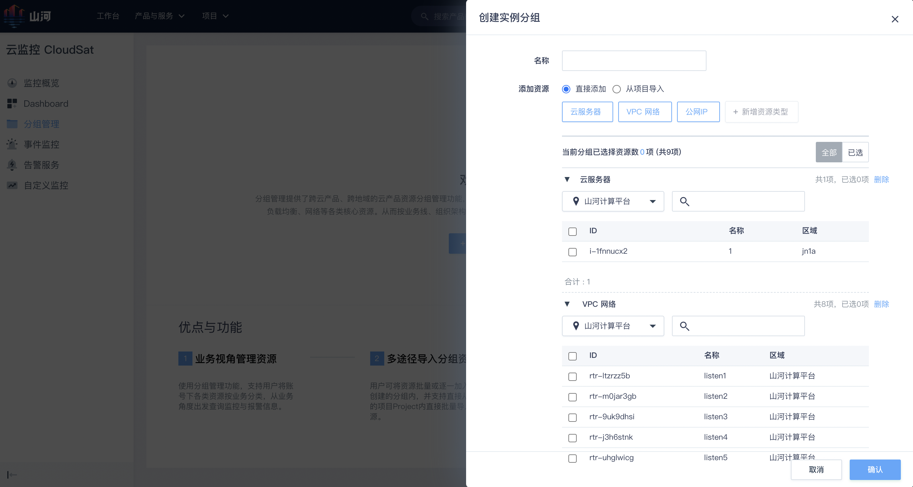
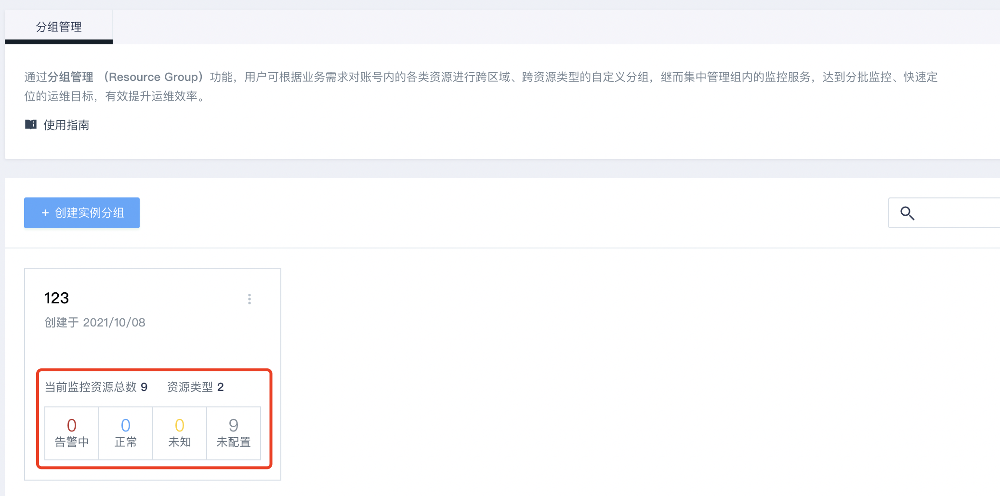
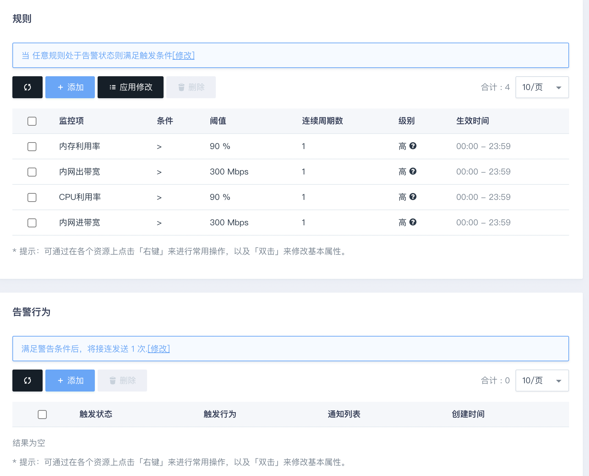

通过分组管理和告警功能构建大批量资源监控告警机制
简介
随着客户的业务发展，企业上云会面临大规模多类型的云产品资源监控运维问题，日常监控往往分布在多地，多业务，多资源无法统一高效监控。本篇实践旨在帮助您使用 CloudSat 提供分组管理和告警服务，可以帮助您的资源进行按业务有效分组，以及规模化的构建告警体系，迅速提升运维效率。
主要概念
分组管理：指对平台所有IaaS、PaaS资源的分组，可在分组后集中管理组内的监控告警服务。更多信息，请参阅什么是分组管理服务？
告警服务：由资源类型、检查周期、告警条件/规则、通知列表等信息组成的具体策略，将策略绑定到具体资源上即可生效。更多信息，请参阅什么是告警服务？
操作步骤
以以下场景为例：
假设我们有多种资源，一部分用于开发项目组(开发项目正式服务01和开发项目正式服务02)，一部分用于测试项目组，业务涉及资源分散于北京3区和上海1区。
-
登录管理控制台，选择产品与服务 > 监控服务 > 云监控 CloudSat，进入云监控页签。
-
单击分组管理，进入分组管理页面。
-
单击新建，配置如下选项。
分组名：输入分组名称，例如：业务命名 添加资源：根据您的实际需求可选择直接添加或从项目导入。
支持批量从项目导入资源，为用户免去重复配置业务分组的繁琐流程。 支持多区资源混合管理，帮助用户在全局的情况下了解自己的资源概况。 支持资源列表搜索、一键全选以及多选功能；友好的批量操作为用户大批量选取资源带来便利，提升配置效率
- 完成后可明确了解当前各业务线资源整体概况，例如：哪些资源未配置告警服务，哪些资源正在告警
通过分组管理的功能可以迅速定位分组内资源的关系，快速了解资源的监控告警状态，迅速察觉异常情况
-
汇聚视图中发现正在告警的资源，并迅速定位具体异常对象。
-
通过告警状况进行针对性排障，如资源超载可以通过扩展资源的方式进行解决。
-
汇聚视图中发现未配置告警服务的资源，可在分组内进行快速绑定告警策略。
-
在告警服务中可查看当前分组内已绑定的告警策略状况。
- 快速查看分组内告警策略的规则
在上图显示的当前组告警策略状况状况中，选择某一条告警策略，点击告警规则下的查看，即可查看分组内该告警策略的规则。
